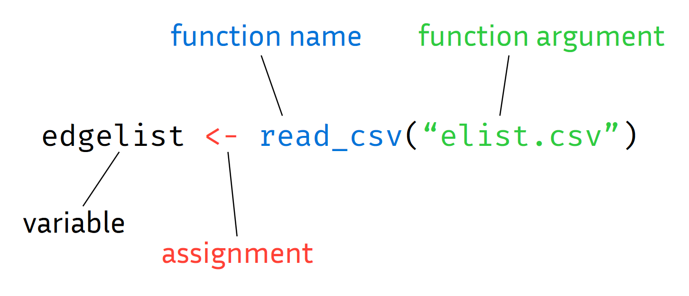

x <- 10 # this is a commentR Basics I
Quarto notebooks
Any applied project is an iterative process which involves a back-and-forth between writing code, looking at data and plots, and taking notes. This document is a Quarto notebook, which allows you to combine prose with code and code output, such as tables or plots, in one place.
We can compile this notebook to various output formats with the big blue Render button to produce nice-looking and reproducible reports.
Quarto allows us to combine different programming languages in one environment. We can include a code chunk containing executable code by writing / in an empty line of the notebook.
Variables and functions
The most basic components of almost all programming languages are variables and functions. Variables store values, such as your input data, and have a name so that you can reference the underlying value in your program. Functions usually (but not always) receive some input, based on which they compute some output (or modify the underlying state of the program).
Variables
To assign a value to a name, in R you use the assignment operator <-:
We can now reference the value using the variable:
x * 2[1] 20You can assign arbitrary values to variables, not just numbers:
name <- "Jakob"Here, I assigned the string "Jakob" to the variable name. Strings are how R represents text and are constructed with quotation marks ("...").
Variable names are case sensitive but cannot include spaces or special symbols, except for underscores (_) and period marks (.):
this is an invalid name <- 1
this-too <- 3Error: <text>:1:6: unexpected symbol
1: this is
^but_THIS_isnt <- 5Functions
To perform any kind of operation, you use a function. E.g., to round a decimal number, we use the round function:
round(3.14159)[1] 3Functions can take inputs, called the arguments, which go into the parentheses right after the function name. Functions might also return some output, but they don’t have to. Most things you do in R will involve calling a function on some arguments and assigning the result to a variable name:

In R, arguments can be specified by name or by position, and often have default values:
round(3.14159, digits=2)[1] 3.14You can define your own functions, which can themselves call other functions:
greet <- function(name) {
paste("Hello", name)
}Here, we defined a function called greet, which has an argument called name that takes in a string and returns a string with a greeting to the passed name. Let’s call it:
greet(name="Daniel")[1] "Hello Daniel"Note that the name argument only exists as a referenceable variable within the scope of the function.
We can of course also call the function on a variable ‘storing’ a name:
y <- "Daniel"
greet(y)[1] "Hello Daniel"Exercises I (10-15 min)
Getting Help: ChatGPT & Co.
Programming frequently involves solving new problems for which you don’t know the solution yet. Luckily, most problems have been solved before by other people. Accordingly, many solutions to frequent problems can be found in a variety of places online.
Large Language Models (LLMs), such as ChatGPT, can be helpful in synthesizing these solutions. But be aware, “AI” tools are not all-knowing and will make mistakes or propose non-optimal solutions, just as the people they learned it from did.
With this in mind, the exercises we do here will frequently go beyond the contents we discussed before. This reflects the process of any real-world project and so will prepare you for pursuing your own research with R.
- Assign your name to a variable and call the
greet(...)function on it which we defined before.
Solution
me <- "Jakob"
greet(me)- Copy the
greet()function from before, rename it togreet_spanishand change it so that it saysHolainstead ofHello.
Solution
greet_spanish <- function(name) {
paste("Hola", name)
}
greet_spanish(me)- Copy the
greet()function again but this time change it so that it takes the greeting as a second function argument instead of specifying it in the function body.
Solution
greet_generic <- function(greeting, name) {
paste(greeting, name)
}
greet_generic("Gruezi", me)- Create a vector with the numbers from 1 to 100 and assign it to a variable called
x.
Solution
x <- 1:100- Find a function that sorts its input in reverse order and apply it to
x.
Solution
sort(x, decreasing=TRUE)Data types
Objects can hold different types of data, as indicated by an object’s class. In the examples above, we have for example seen numbers (class numeric), or strings (class character). We can see what an object is with the class function:
my_number <- 1
class(y)[1] "character"Classes can become arbitrarily complex and determine what you can and cannot do with an object. For example, try adding two strings:
"a" + "b"Error in "a" + "b": non-numeric argument to binary operatorVectors
The most basic data structure in R is the vector. It contains elements of the same basic data type (e.g. numeric or character). We can create one with the c() function (for combine or concatenate):
my_vector <- c(1,3,4,2)
my_vector[1] 1 3 4 2In fact, even single numbers are just one-element vectors in R. Most operations in R ‘vectorize’, i.e. are applied element-wise:
sqrt(my_vector)[1] 1.000000 1.732051 2.000000 1.414214or
my_vector == 2[1] FALSE FALSE FALSE TRUEIndexing
To obtain a specific element from a vector we use square braces for an operation called indexing:
my_vector[2][1] 3You can also use another vector as an indexing variable:
my_idx <- c(1,2,3)
my_vector[my_idx][1] 1 3 4my_vector[1:3][1] 1 3 4Lists
Vectors have the constraint that all their elements need to have the same basic data type:
c("f", 1) # 1 is converted to string [1] "f" "1"A more flexible kind of container is the list, which allows you to store arbitrary data types, e.g.:
mylist <- list(
mynumber=1,
mystring="abc",
mylist=list(x=1, b="a")
)You can access the elements of a list with double square brackets:
mylist[[2]][1] "abc"You can also access elements by name using the $ symbol, which is often preferable:
mylist$mystring[1] "abc"New elements can also be added to a list this way:
mylist$newstring <- "xyz"
mylist$mynumber
[1] 1
$mystring
[1] "abc"
$mylist
$mylist$x
[1] 1
$mylist$b
[1] "a"
$newstring
[1] "xyz"Data frames
A special kind of list that is used to represent tabular data (as in an excel spreadsheet) is the data.frame. The basic entries of a data frame are the columns in the table. Columns are vectors, and thus have to hold elements of the same basic data type (e.g. numbers). In the context of a data frame, the column vectors are also constrained to be the same length:
df <- data.frame(
name = c("Tim", "Tom", "Tina"),
age = c(21, 23, 24),
subject = c("Geography", "Economics", "Physics")
)
df name age subject
1 Tim 21 Geography
2 Tom 23 Economics
3 Tina 24 PhysicsTo access the columns of a data frame, we can again use the $ symbol, as with regular lists:
df$subject[1] "Geography" "Economics" "Physics" Data frames are the bread-and-butter data structure of most regular data analysis projects, so you should get comfortable with them.
Exercises II (10-15 min)
Packages
While R comes ‘batteries included’ in many regards, much of the functionality that makes R useful is located in packages. We load a package with the library function.
If we try to load a package which has not yet been installed, RStudio will prompt us to install it. Alternatively, we can install a package via install.packages("stringr") (note the quotes).
If you put install.packages("...") into a code cell, you should probably delete it after running to avoid reinstalling packages everytime you run the notebook. Instead you can also install your packages via the console.
- What is wrong with this piece of code? Find the errors and fix them.
mydf <- data.frame(
country <- ("Germany", "France", "Austria"),
capital <- c("Berlin", "Paris"),
gdp <- c(4.12, 2.80 0.48)- Sample 10 numbers from a normal distribution with mean 0 and standard deviation 2 and assign them to a variable called
s.
Solution
s <- rnorm(10, mean=0, sd=2)- Compute the empirical mean and the standard deviation of the numbers in
s.
Solution
mean(s)
sd(s)- Find the minimum and the maximum value of
sprogrammatically.
Solution
min(s)
max(s)- What are the indexes of the minimum and maximum value?
Solution
which.min(s)
which.max(s)- Find (the indexes of) all values in
sthat are larger than 0:
Solution
idx <- which(s > 0)
s[idx]- Split the following string at the comma to produce a vector of three strings:
names <- "Tim,Tom,Tina"Solution
library(stringr)
str_split1(names, ",")- Here is a slightly more complex piece of code. Use your online resources to get help with understanding what each line is doing.
library(ggplot2)
data <- data.frame(
group = rep(c("A", "B", "C"), each = 50),
value = c(rnorm(50, mean = 10, sd = 2),
rnorm(50, mean = 12, sd = 2),
rnorm(50, mean = 15, sd = 2))
)
ggplot(data, aes(x = group, y = value)) +
geom_boxplot() +
labs(title = "Boxplot Example", x = "Group", y = "Value")Scripting workflows
R is well suited for a scripting workflow, where you simply write the steps required to run your analysis into an R file in the correct sequence so that running that file will reproduce your whole analysis.
A typical high-level workflow looks something like this:
data <- read_data_from_file(file)
data_cleaned <- clean_and_preprocess_data(data)
summaries <- compute_summaries_from_data(data_cleaned)
plot <- plot_data_summaries(summaries)In more complex analyses, these will usually each be split into multiple intermediate steps but it is good to keep track of the overall structure (for which packing intermediate steps into your own functions can be useful).
You can then easily come back to your script at a later point to look up how exactly you performed a specific step or to make changes.